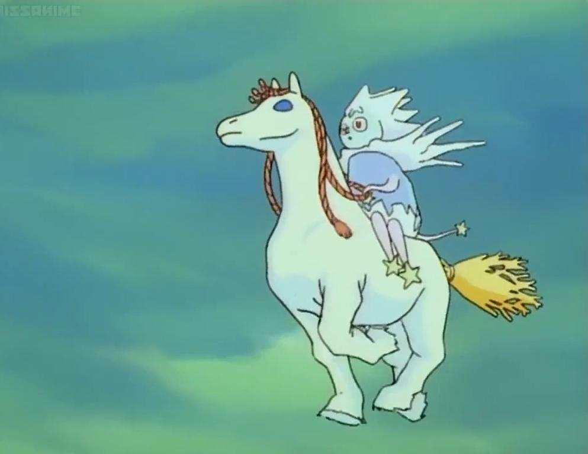

Jäärouva on Muumilaakson tarinoissa kahdesti esiintyvä hahmo, joka tästä huolimatta on pelottanut suuresti lapsia. Kerran talvessa Jäärouva ilmestyy Muumilaaksoon. Kun häntä katsoo silmiin, jäätyy silmänräpäyksessä. Tove Jansson ei ikinä piirtänyt Jäärouvaa mutta kuvailee häntä kauniiksi vitivalkoiseksi naiseksi, jolla on kylmän siniset silmät. Tästä voidaan päätellä, että jäärouva voi olla jokaisen mielikuvituksen tuote. Tv-sarjassa nähty Jäärouva on sarjan animoijan versio jäärouvasta. Jäärouvasta ei löydy paljoa tietoa, joten sen tarinaan jää paljon mystiikkaa. Asiat joita emme lähtökohtaisesti ymmärrä ovat sellaisia, mitkä saavat meidät pelkäämään. Tämä ilmiö liittyy varmasti myös Jäärouvan ympärillä pyörivään mystiikkaan.

Jäärouvan ja Pikku Myyn kohtaaminen